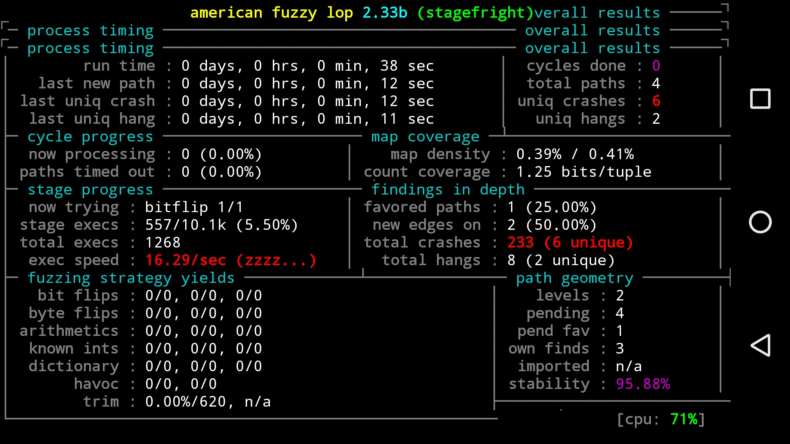

The AFL(american fuzzy lop) is a awsome fuzzing tool wrote by lcamtuf@google. It has many outstanding features and almost been the most popular fuzzer. There are many vulnerabilities found by afl-fuzz, you can get more information about it form it’s website:http://lcamtuf.coredump.cx/afl/. The original afl-fuzz only supports linux. However, as i know some teams has already ported it to android last year, but didn’t publish. I have studied the afl-fuzz for a period of time, and finally ported it to android by the llvm mode. Several weeks ago i found the ele7enxxh has published the android-enabled version of AFL, howerver he used a different way by writing the assembly code for arm. And here i will share my way by using the llvm-mode.
Modify source code
The version of afl-fuzz i used is the 2.33b, you can download it from the website. Other versions are also available. These are several files need to be modified. Firstly we should modify the afl-fuzz.c, and replace the shm to ashm.The best way is use the ‘#define’ to modify the code.Like this:1
2
3
4
5
6
7
8
9
for android use ashmem instead of shm. And here is another header file to be mofified.1
2
3
4
5
6
Because we replaced shm to ashm, the shmget function should be replaced by ashm too. We can add the function named ashmem_create_region.1
2
3
4
5
6
7
8
9
10
11
12
13
14
15
16
17
18
19
20
21
22
23
24
25
26
27
28
29
30/* We need to implement ashmem_create_region by ourselfs as NDK does not ship
* proper implementaton due to possible API changes. */
int ashmem_create_region(const char *name, size_t size)
{
int fd, ret;
fd = open("/dev/ashmem", O_RDWR);
if (fd < 0)
return fd;
if (name) {
char buf[ASHMEM_NAME_LEN] = {0};
strlcpy(buf, name, sizeof(buf));
ret = ioctl(fd, ASHMEM_SET_NAME, buf);
if (ret < 0)
goto error;
}
ret = ioctl(fd, ASHMEM_SET_SIZE, size);
if (ret < 0)
goto error;
return fd;
error:
close(fd);
return ret;
}
And then modify the code in ‘setup_shm’:
1 |
|
The ‘bind_to_free_cpu’ function did’t work on android, so we can use “#ifndef” to delete it.
1 | /* Build a list of processes bound to specific cores. Returns -1 if nothing |
Replace the ‘remove_shm’ function:1
2
3
4
5
6
7
8
9/* Get rid of shared memory (atexit handler). */
static void remove_shm(void) {
shmctl(shm_id, IPC_RMID, NULL);
}
Another one thing need to do is to comment the termminal size check in ‘show_stats’, or the UI won’t appear as normal.
1 |
|
And that’s all the code should be modified in afl-fuzz.c. Then we should change the name of folder ‘2.33b’ to ‘jni’.
Then add the ‘Android.mk’ and ‘Application.mk’.
Android.mk:1
2
3
4
5
6
7
8
9
10
11LOCAL_PATH := $(call my-dir)
include $(CLEAR_VARS)
LOCAL_MODULE := afl-fuzz
LOCAL_SRC_FILES := afl-fuzz.c
LOCAL_CFLAGS := -funroll-loops -Wall -D_FORTIFY_SOURCE=2 -g -Wno-pointer-sign -DAFL_PATH=\"/usr/local/lib/afl\" -DDOC_PATH=\"/usr/local/share/doc/afl\" -DBIN_PATH=\"/usr/local/bin\" -DVERSION=\"2.33b\"
LOCAL_CFLAGS += -pie -fPIE
LOCAL_LDFLAGS += -pie -fPIE
include $(BUILD_EXECUTABLE)
Application.mk:1
2APP_PLATFORM := android-23
APP_ABI := armeabi armeabi-v7a x86
The content of ‘LOCAL_CFLAGS’ can be get by the command ‘make -v’.After doing these works, we could compile the afl-fuzz executable file by using1
ndk-build
And you can find the executable file in the folder ‘libs’ if all goes right.
Then go to the ‘llvm_mode’ folder. The following is all that needs to be changed.
Like the changes in afl-fuzz.c, we should replace shm to ashm firstly.1
2
3
4
5
And replace the shmat to mmap:1
2
3
4
5
6
7
8
9
__afl_area_ptr = mmap(NULL, MAP_SIZE, PROT_READ | PROT_WRITE, MAP_SHARED, shm_id, 0);
__afl_area_ptr = shmat(shm_id, NULL, 0);
Delete the task ‘afl-llvm-rt’ and ‘testbuild’ in the makefile.And add one line：
1 | CC = the clang path where you build before |
Delete this line in afl-llvm-fast.c:
1 | "if (!strcmp(cur, "-shared")) maybe_linking = 0; |
or it will show the error “undefined reference \”afl-area_prev\”” when you build the android module.After doing these works, run the command1
make
to complie the ‘afl-llvm-fast’ and ‘afl-llvm-fast++’.You will find the two file in the main folder.And the run the command:1
/home/zke1e/BuildingTools/LLVMToolChains/build/bin/clang -target arm-linux-android -I /home/zke1e/Workspace/android-6.0.1_r46/prebuilts/ndk/9/platforms/android-21/arch-arm/usr/include -O3 -funroll-loops -Wall -D_FORTIFY_SOURCE=2 -g -Wno-pointer-sign -DAFL_PATH=\"/usr/local/lib/afl\" -DBIN_PATH=\"/usr/local/bin\" -DVERSION=\"2.33b\" -fPIC -c afl-llvm-rt.o.c -o ../afl-llvm-rt.o
to build the ‘afl-llvm-rt.o’ for android.You should replace the paths ‘/home/zke1e/…’ to your paths.
Then copy the ‘afl-llvm-fast’ and ‘afl-llvm-fast++’ to the ‘prebuilts/clang/linux-x86/host/3.6/bin’ under your android source code directory.Backup the original ‘clang’ and ‘clang++’, then rename the ‘afl-llvm-fast’ and create a link file.
1 | $ mv afl-llvm-fast clang |
Build module
Go to the android source code directory.Run these commands:1
2$ build/envsetup.sh
$ lunch
Then goto the module’s folder where you want to fuzz.Backup the original makefile, then add one line:1
LOCAL_CLANG=true
Export following environment variables:1
2
3$ export AFL_CC="the clang path where you build"
$ export AFL_CXX="the clang++ path where you build"
$ export AFL_PATH="the afl-fuzz path"
Then run:1
$ mm
to build the new module.Then push the new module to your phone and replace the original file.Also push the afl-fuzz executable file and the testcase to your phone.Then run the afl by this command:1
$ ./afl-fuzz -i input -o output ./modulename @@
Finally it may show the fuzzing status on the screen just like this.
